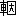

| 地獄変 | |
| 芥川 竜之介 | |
| (2012) | |
地獄変
芥川龍之介
堀川の大殿様
のやうな方は、これまでは固
より、後の世には恐らく二人とはいらつしやいますまい。噂に聞きますと、あの方の御誕生になる前には、大威徳明王
の御姿が御母君
の夢枕にお立ちになつたとか申す事でございますが、兎
に角
御生れつきから、並々の人間とは御違ひになつてゐたやうでございます。でございますから、あの方の為
さいました事には、一つとして私どもの意表に出てゐないものはございません。早い話が堀川のお邸の御規模を拝見致しましても、壮大と申しませうか、豪放と申しませうか、到底
私どもの凡慮には及ばない、思ひ切つた所があるやうでございます。中にはまた、そこを色々とあげつらつて大殿様の御性行を始皇帝
や煬帝
に比べるものもございますが、それは諺
に云ふ群盲
の象を撫
でるやうなものでもございませうか。あの方の御思召
は、決してそのやうに御自分ばかり、栄耀栄華をなさらうと申すのではございません。それよりはもつと下々の事まで御考へになる、云はば天下と共に楽しむとでも申しさうな、大腹中
の御器量がございました。
それでございますから、二条大宮の百鬼夜行
に御遇ひになつても、格別御障
りがなかつたのでございませう。又陸奥
の塩竈
の景色を写したので名高いあの東三条の河原院に、夜な〳〵現はれると云ふ噂のあつた融
の左大臣の霊でさへ、大殿様のお叱りを受けては、姿を消したのに相違ございますまい。かやうな御威光でございますから、その頃洛中の老若男女が、大殿様と申しますと、まるで権者
の再来のやうに尊み合ひましたも、決して無理ではございません。何時ぞや、内の梅花の宴からの御帰りに御車の牛が放れて、折から通りかゝつた老人に怪我をさせました時でさへ、その老人は手を合せて、大殿様の牛にかけられた事を難有がつたと申す事でございます。
さやうな次第でございますから、大殿様御一代の間には、後々までも語り草になりますやうな事が、随分沢山にございました。大饗
の引出物に白馬
ばかりを三十頭、賜
つたこともございますし、長良
の橋の橋柱
に御寵愛の童
を立てた事もございますし、それから又華陀
の術を伝へた震旦
の僧に、御腿
の瘡
を御切らせになつた事もございますし、――一々数へ立てゝ居りましては、とても際限がございません。が、その数多い御逸事の中でも、今では御家の重宝になつて居ります地獄変の屛風の由来程、恐ろしい話はございますまい。日頃は物に御騒ぎにならない大殿様でさへ、あの時ばかりは、流石
に御驚きになつたやうでございました。まして御側に仕へてゐた私どもが、魂も消えるばかりに思つたのは、申し上げるまでもございません。中でもこの私なぞは、大殿様にも二十年来御奉公申して居りましたが、それでさへ、あのやうな凄じい見物
に出遇つた事は、ついぞ又となかつた位でございます。
しかし、その御話を致しますには、予め先づ、あの地獄変の屛風を描きました、良秀
と申す画師の事を申し上げて置く必要がございませう。
良秀と申しましたら、或は唯今でも猶、あの男の事を覚えていらつしやる方がございませう。その頃絵筆をとりましては、良秀の右に出るものは一人もあるまいと申された位、高名な絵師でございます。あの時の事がございました時には、彼是もう五十の阪
に、手がとゞいて居りましたらうか。見た所は唯、背の低い、骨と皮ばかりに瘦せた、意地の悪さうな老人でございました。それが大殿様の御邸へ参ります時には、よく丁字染
の狩衣
に揉烏帽子
をかけて居りましたが、人がらは至つて卑しい方で、何故か年よりらしくもなく、唇の目立つて赤いのが、その上に又気味の悪い、如何にも獣めいた心もちを起させたものでございます。中にはあれは画筆を舐
めるので紅がつくのだなどゝ申した人も居りましたが、どう云ふものでございませうか。尤もそれより口の悪い誰彼は、良秀の立居
振舞
が猿のやうだとか申しまして、猿秀と云ふ諢名
までつけた事がございました。
いや猿秀と申せば、かやうな御話もございます。その頃大殿様の御邸には、十五になる良秀の一人娘が、小女房
に上つて居りましたが、これは又生みの親には似もつかない、愛嬌のある娘
でございました。その上早く女親に別れましたせゐか、思ひやりの深い、年よりはませた、悧巧な生れつきで、年の若いのにも似ず、何かとよく気がつくものでございますから、御台様
を始め外の女房たちにも、可愛がられて居たやうでございます。
すると何かの折に、丹波の国から人馴れた猿を一匹、献上したものがございまして、それに丁度悪戯盛
りの若殿様が、良秀と云ふ名を御つけになりました。唯でさへその猿の容子が可笑
しい所へ、かやうな名がついたのでございますから、御邸中誰一人笑はないものはございません。それも笑ふばかりならよろしうございますが、面白半分に皆のものが、やれ御庭の松に上つたの、やれ曹司
の畳をよごしたのと、その度毎に、良秀々々と呼び立てゝは、兎に角いぢめたがるのでございます。
所が或日の事、前に申しました良秀の娘が、御文を結んだ寒紅梅の枝を持つて、長い御廊下を通りかゝりますと、遠くの遣戸
の向うから、例の小猿の良秀が、大方足でも挫
いたのでございませう、何時ものやうに柱へ駆け上る元気もなく、跛
を引き〳〵、一散に、逃げて参るのでございます。しかもその後からは楚
をふり上げた若殿様が「柑子
盗人
め、待て。待て。」と仰有
りながら、追ひかけていらつしやるのではございませんか。良秀の娘はこれを見ますと、ちよいとの間ためらつたやうでございますが、丁度その時逃げて来た猿が、袴の裾にすがりながら、哀れな声を出して啼き立てました――と、急に可哀さうだと思ふ心が、抑へ切れなくなつたのでございませう。片手に梅の枝をかざした儘、片手に紫匂
の袿
の袖を軽さうにはらりと開きますと、やさしくその猿を抱き上げて、若殿様の御前に小腰をかゞめながら「恐れながら畜生でございます。どうか御勘弁遊ばしまし。」と、涼しい声で申し上げました。
が、若殿様の方は、気負
つて駆けてお出でになつた所でございますから、むづかしい御顔をなすつて、二三度御み足を御踏鳴
しになりながら、
「何でかばふ。その猿は柑子盗人だぞ。」
「畜生でございますから、......」
娘はもう一度かう繰返しましたがやがて寂しさうにほほ笑みますと、
「それに良秀と申しますと、父が御折檻
を受けますやうで、どうも唯見ては居られませぬ。」と、思ひ切つたやうに申すのでございます。これには流石
の若殿様も、我
を御折りになつたのでございませう。
「さうか。父親の命乞
なら、枉
げて赦
してとらすとしよう。」
不承無承にかう仰有ると、楚
をそこへ御捨てになつて、元いらしつた遣戸の方へ、その儘御帰りになつてしまひました。
良秀の娘とこの小猿との仲がよくなつたのは、それからの事でございます。娘は御姫様から頂戴した黄金の鈴を、美しい真紅
の紐に下げて、それを猿の頭へ懸けてやりますし、猿は又どんな事がございましても、滅多に娘の身のまはりを離れません。或時娘の風邪
の心地で、床に就きました時なども、小猿はちやんとその枕もとに坐りこんで、気のせゐか心細さうな顔をしながら、頻
に爪を嚙んで居りました。
かうなると又妙なもので、誰も今までのやうにこの小猿を、いぢめるものはございません。いや、反
つてだん〳〵可愛がり始めて、しまひには若殿様でさへ、時々柿や栗を投げて御やりになつたばかりか、侍の誰やらがこの猿を足蹴
にした時なぞは、大層御立腹にもなつたさうでございます。その後大殿様がわざ〳〵良秀の娘に猿を抱いて、御前へ出るやうと御沙汰になつたのも、この若殿様の御腹立になつた話を、御聞きになつてからだとか申しました。その序
に自然と娘の猿を可愛がる所由
も御耳にはいつたのでございませう。
「孝行な奴ぢや。褒めてとらすぞ。」
かやうな御意で、娘はその時、紅
の袙
を御褒美に頂きました。所がこの袙を又見やう見真似に、猿が恭しく押頂きましたので、大殿様の御機嫌は、一入
よろしかつたさうでございます。でございますから、大殿様が良秀の娘を御贔屓
になつたのは、全くこの猿を可愛がつた、孝行恩愛の情を御賞美なすつたので、決して世間で兎や角申しますやうに、色を御好みになつた訳ではございません。尤もかやうな噂の立ちました起りも、無理のない所がございますが、それは又後になつて、ゆつくり御話し致しませう。こゝでは唯大殿様が、如何に美しいにした所で、絵師風情
の娘などに、想ひを御懸けになる方ではないと云ふ事を、申し上げて置けば、よろしうございます。
さて良秀の娘は、面目を施して御前を下りましたが、元より悧巧な女でございますから、はしたない外の女房たちの妬
を受けるやうな事もございません。反つてそれ以来、猿と一しよに何かといとしがられまして、取分け御姫様の御側からは御離れ申した事がないと云つてもよろしい位、物見車の御供にもついぞ欠けた事はございませんでした。
が、娘の事は一先づ措
きまして、これから又親の良秀の事を申し上げませう。成程
猿の方は、かやうに間もなく、皆のものに可愛がられるやうになりましたが、肝腎
の良秀はやはり誰にでも嫌はれて、相不変
陰へまはつては、猿秀呼
りをされて居りました。しかもそれが又、御邸の中ばかりではございません。現に横川
の僧都様も、良秀と申しますと、魔障にでも御遇ひになつたやうに、顔の色を変へて、御憎み遊ばしました。（尤もこれは良秀が僧都様の御行状を戯画
に描いたからだなどと申しますが、何分下
ざまの噂でございますから、確に左様とは申されますまい。）兎に角、あの男の不評判は、どちらの方に伺ひましても、さう云ふ調子ばかりでございます。もし悪く云はないものがあつたと致しますと、それは二三人の絵師仲間か、或は又、あの男の絵を知つてゐるだけで、あの男の人間は知らないものばかりでございませう。
しかし実際、良秀には、見た所が卑しかつたばかりでなく、もつと人に嫌がられる悪い癖があつたのでございますから、それも全く自業自得とでもなすより外に、致し方はございません。
その癖と申しますのは、吝嗇
で、慳貪
で、恥知らずで、怠けもので、強慾で――いやその中でも取分け甚しいのは、横柄で高慢で、何時も本朝第一の絵師と申す事を、鼻の先へぶら下げてゐる事でございませう。それも画道の上ばかりならまだしもでございますが、あの男の負け惜しみになりますと、世間の習慣
とか慣例
とか申すやうなものまで、すべて莫迦
に致さずには置かないのでございます。これは永年良秀の弟子になつてゐた男の話でございますが、或日さる方の御邸で名高い檜垣
の巫女
に御霊
が憑
いて、恐しい御託宣があつた時も、あの男は空耳
を走らせながら、有合せた筆と墨とで、その巫女の物凄い顔を、丁寧に写して居つたとか申しました。大方御霊の御祟
りも、あの男の眼から見ましたなら、子供欺し位にしか思はれないのでございませう。
さやうな男でございますから、吉祥天を描く時は、卑しい傀儡
の顔を写しましたり、不動明王を描く時は、無頼
の放免
の姿を像
りましたり、いろ〳〵の勿体
ない真似を致しましたが、それでも当人を詰
りますと「良秀の描
いた神仏が、その良秀に冥罰
を当てられるとは、異な事を聞くものぢや」と空嘯
いてゐるではございませんか。これには流石の弟子たちも呆れ返つて、中には未来の恐ろしさに、匆々暇をとつたものも、少くなかつたやうに見うけました。――先づ一口に申しましたなら、慢業重畳
とでも名づけませうか。兎に角当時天
が下
で、自分程の偉い人間はないと思つてゐた男でございます。
従つて良秀がどの位画道でも、高く止つて居りましたかは、申し上げるまでもございますまい。尤もその絵でさへ、あの男のは筆使ひでも彩色でも、まるで外の絵師とは違つて居りましたから、仲の悪い絵師仲間では、山師だなどと申す評判も、大分あつたやうでございます。その連中の申しますには、川成
とか金岡
とか、その外昔の名匠の筆になつた物と申しますと、やれ板戸の梅の花が、月の夜毎に匂つたの、やれ屛風の大宮人
が、笛を吹く音さへ聞えたのと、優美な噂が立つてゐるものでございますが、良秀の絵になりますと、何時でも必ず気味の悪い、妙な評判だけしか伝はりません。譬
へばあの男が龍蓋寺
の門へ描きました、五趣生死
の絵に致しましても、夜更
けて門の下を通りますと、天人の嘆息
をつく音や啜り泣きをする声が、聞えたと申す事でございます。いや、中には死人の腐つて行く臭気を、嗅いだと申すものさへございました。それから大殿様の御云ひつけで描いた、女房たちの似絵
なども、その絵に写されたゞけの人間は、三年と尽
たない中に、皆魂の抜けたやうな病気になって、死んだと申すではございませんか。悪く云ふものに申させますと、それが良秀の絵の邪道に落ちてゐる、何よりの証拠ださうでございます。
が、何分前にも申し上げました通り、横紙破りな男でございますから、それが反つて良秀は大自慢で、何時ぞや大殿様が御冗談に、「その方は兎角醜いものが好きと見える。」と仰有つた時も、あの年に似ず赤い唇でにやりと気味悪く笑ひながら、「さやうでござりまする。かいなでの絵師には総じて醜いものゝ美しさなどと申す事は、わからう筈がございませぬ。」と、横柄に御答へ申し上げました。如何に本朝第一の絵師に致せ、よくも大殿様の御前へ出て、そのやうな高言が吐けたものでございます、先刻引合に出しました弟子が、内々師匠に「智羅永寿
」と云ふ諢名をつけて、増長慢を譏
つて居りましたが、それも無理はございません。御承知でもございませうが、「智羅永寿」と申しますのは、昔震旦から渡つて参りました天狗の名でございます。
しかしこの良秀にさへ――この何とも云ひやうのない、横道者の良秀にさへ、たつた一つ人間らしい、情愛のある所がございました。
と申しますのは、良秀が、あの一人娘の小女房をまるで気違ひのやうに可愛がつてゐた事でございます。先刻申し上げました通り、娘も至つて気のやさしい、親思ひの女でございましたが、あの男の子煩悩
は、決してそれにも劣りますまい。何しろ娘の着る物とか、髪飾とかの事と申しますと、どこの御寺の勧進にも喜捨をした事のないあの男が、金銭には更に惜し気もなく、整へてやると云ふのでございますから、噓のやうな気が致すではございませんか。
が、良秀の娘を可愛がるのは、唯可愛がるだけで、やがてよい聟をとらうなどと申す事は、夢にも考へて居りません。それ所か、あの娘へ悪く云ひ寄るものでもございましたら、反つて辻冠者
ばらでも駆り集めて、暗打
位は喰はせ兼ねない量見でございます。でございますから、あの娘が大殿様の御声がゝりで、小女房に上りました時も、老爺
の方は大不服で、当座の間は御前へ出ても、苦り切つてばかり居りました。大殿様が娘の美しいのに御心を惹かされて、親の不承知なのもかまはずに、召し上げたなどと申す噂は、大方かやうな容子を見たものゝ当推量
から出たのでございませう。
尤も其噂は噓でございましても、子煩悩の一心から、良秀が始終娘の下るやうに祈つて居りましたのは確でございます。或時大殿様の御云ひつけで、稚児文殊
を描きました時も、御寵愛の童
の顔を写しまして、見事な出来でございましたから、大殿様も至極御満足で、
「褒美には望みの物を取らせるぞ。遠慮なく望め。」と云ふ難有い御言
が下りました。すると良秀は畏まつて、何を申すかと思ひますと、
「何卒私の娘をば御下げ下さいまするやうに。」と臆面もなく申し上げました。外のお邸ならば兎も角も、堀河の大殿様の御側に仕へてゐるのを、如何に可愛いからと申しまして、かやうに無躾
に御暇を願ひますものが、どこの国に居りませう。これには大腹中の大殿様も聊
か御機嫌を損じたと見えまして、暫くは唯、黙つて良秀の顔を眺めて御居でになりましたが、やがて、
「それはならぬ。」と吐出
すやうに仰有ると、急にその儘御立になつてしまひました。かやうな事が、前後四五遍もございましたらうか。今になつて考へて見ますと、大殿様の良秀を御覧になる眼は、その都度にだんだんと冷やかになつていらしつたやうでございます。すると又、それにつけても、娘の方は父親の身が案じられるせゐでゞもございますか、曹司へ下つてゐる時などは、よく袿
の袖を嚙んで、しく〳〵泣いて居りました。そこで大殿様が良秀の娘に懸想
なすつたなどと申す噂が、愈々拡がるやうになつたのでございませう。中には地獄変の屛風の由来も、実は娘が大殿様の御意に従はなかつたからだなどと申すものも居りますが、元よりさやうな事がある筈はございません。
私どもの眼から見ますと、大殿様が良秀の娘を御下げにならなかつたのは、全く娘の身の上を哀れに思召したからで、あのやうに頑
な親の側へやるよりは御邸に置いて、何の不自由なく暮させてやらうと云ふ難有い御考へだつたやうでございます。それは元より気立ての優しいあの娘を、御贔屓になつたのには間違ひございません。が、色を御好みになつたと申しますのは、恐らく牽強附会
の説でございませう。いや、跡方もない噓と申した方が、宜しい位でございます。
それは兎も角もと致しまして、かやうに娘の事から良秀の御覚えが大分悪くなつて来た時でございます。どう思召したか、大殿様は突然良秀を御召になつて、地獄変の屛風を描くやうにと、御云ひつけなさいました。
地獄変の屛風と申しますと、私はもうあの恐ろしい画面の景色が、ありありと眼の前へ浮んで来るやうな気が致します。
同じ地獄変と申しましても、良秀の描きましたのは、外の絵師のに比べますと、第一図取りから似て居りません。それは一帖の屛風の片隅へ、小さく十王を始め眷属
たちの姿を描いて、あとは一面に紅蓮
大紅蓮
の猛火が剣山刀樹も爛
れるかと思ふ程渦を巻いて居りました。でございますから、唐
めいた冥官
たちの衣裳が、点々と黄や藍を綴つて居ります外は、どこを見ても烈々とした火焰の色で、その中をまるで卍のやうに、墨を飛ばした黒煙と金粉を煽つた火の粉とが、舞ひ狂つて居るのでございます。
こればかりでも、随分人の目を驚かす筆勢でございますが、その上に又、業火
に焼かれて、転々と苦しんで居ります罪人も、殆ど一人として通例の地獄絵にあるものはございません。何故
かと申しますと良秀は、この多くの罪人の中に、上は月卿雲客
から下は乞食非人まで、あらゆる身分の人間を写して来たからでございます。束帯のいかめしい殿上人
、五つ衣
のなまめかしい青女房、珠数をかけた念仏僧、高足駄を穿いた侍学生
、細長
を着た女
の童
、幣
をかざした陰陽師
――一々数へ立てゝ居りましたら、とても際限はございますまい。兎に角さう云ふいろ〳〵の人間が、火と煙とが逆捲く中を、牛頭
馬頭
の獄卒に虐
まれて、大風に吹き散らされる落葉のやうに、紛々と四方八方へ逃げ迷つてゐるのでございます。鋼叉
に髪をからまれて、蜘蛛よりも手足を縮めてゐる女は、神巫
の類
でゞもございませうか。手矛
に胸を刺し通されて、蝙蝠
のやうに逆になつた男は、生受領
か何かに相違ございますまい。その外或は鉄
の笞
に打たれるもの、或は千曳
の磐石
に押されるもの、或は怪鳥
の嘴
にかけられるもの、或は又毒龍の顎
に嚙まれるもの――、呵責
も亦罪人の数に応じて、幾通りあるかわかりません。
が、その中でも殊に一つ目立つて凄
じく見えるのは、まるで獣
の牙のやうな刀樹の頂きを半ばかすめて（その刀樹の梢にも、多くの亡者が纍々
と、五体を貫
かれて居りましたが）中空
から落ちて来る一輛の牛車でございませう。地獄の風に吹き上げられた、その車の簾
の中には、女御、更衣にもまがふばかり、綺羅
びやかに装つた女房が、丈の黒髪を炎の中になびかせて、白い頸
を反
らせながら、悶え苦しんで居りますが、その女房の姿と申し、又燃えしきつてゐる牛車と申し、何一つとして炎熱地獄の責苦を偲
ばせないものはございません。云はゞ広い画面の恐ろしさが、この一人の人物に輳
つてゐるとでも申しませうか。これを見るものゝ耳の底には、自然と物凄い叫喚の声が伝はつて来るかと疑ふ程、入神の出来映えでございました。
あゝ、これでございます、これを描く為めに、あの恐ろしい出来事が起つたのでございます。又さもなければ如何に良秀でも、どうしてかやうに生々と奈落の苦艱
が画かれませう。あの男はこの屛風の絵を仕上げた代りに、命さへも捨てるやうな、無惨な目に出遇ひました。云はゞこの絵の地獄は、本朝第一の絵師良秀が、自分で何時か墜ちて行く地獄だつたのでございます。......
私はあの珍しい地獄変の屛風の事を申上げますのを急いだあまりに、或は御話の順序を顚倒致したかも知れません。が、これからは又引き続いて、大殿様から地獄絵を描けと申す仰せを受けた良秀の事に移りませう。
良秀はそれから五六箇月の間、まるで御邸へも伺はないで、屛風の絵にばかりかゝつて居りました。あれ程の子煩悩がいざ絵を描くと云ふ段になりますと、娘の顔を見る気もなくなると申すのでございますから、不思議なものではございませんか。先刻申し上げました弟子の話では、何でもあの男は仕事にとりかゝりますと、まるで狐でも憑
いたやうになるらしうございます。いや実際当時の風評に、良秀が画道で名を成したのは、福徳の大神
に祈誓
をかけたからで、その証拠にはあの男が絵を描いてゐる所を、そつと物陰
から覗いて見ると、必ず陰々として霊狐の姿が、一匹ならず前後左右に、群つてゐるのが見えるなどと申す者もございました。その位でございますから、いざ画筆を取るとなると、その絵を描き上げると云ふより外は、何も彼も忘れてしまふのでございませう。昼も夜も一間に閉ぢこもつたきりで、滅多に日の目も見た事はございません。――殊に地獄変の屛風を描いた時には、かう云ふ夢中になり方が、甚しかつたやうでございます。
と申しますのは何もあの男が、昼も蔀
も下
した部屋の中で、結燈台
の火の下に、秘密の絵の具を合せたり、或は弟子たちを、水干やら狩衣やら、さま〴〵に着飾らせて、その姿を、一人づゝ丁寧に写したり、――さう云ふ事ではございません。それ位の変つた事なら、別にあの地獄変の屛風を描かなくとも、仕事にかゝつてゐる時とさへ申しますと、何時でもやり兼ねない男なのでございます。いや、現に龍蓋寺
の五趣生死
の図を描きました時などは、当り前の人間なら、わざと眼を外
らせて行くあの往来の屍骸の前へ、悠々と腰を下して、半ば腐れかかつた顔や手足を、髪の毛一すぢも違へずに、写して参つた事がございました。では、その甚しい夢中になり方とは、一体どう云ふ事を申すのか、流石に御わかりにならない方もいらつしやいませう。それは唯今詳しい事は申し上げてゐる暇もございませんが、主な話を御耳に入れますと、大体先
かやうな次第なのでございます。
良秀の弟子の一人が（これもやはり、前に申した男でございますが）或日絵の具を溶いて居りますと、急に師匠が参りまして、
「己は少し午睡
をしようと思ふ。がどうもこの頃は夢見が悪い。」とかう申すのでございます。別にこれは珍しい事でも何でもございませんから、弟子は手を休めずに、唯、
「さやうでございますか。」と一通りの挨拶を致しました。所が、良秀は、何時になく寂しさうな顔をして、
「就いては、己が午睡をしてゐる間中、枕もとに坐つてゐて貰ひたいのだが。」と、遠慮がましく頼むではございませんか。弟子は何時になく、師匠が夢なぞを気にするのは、不思議だと思ひましたが、それも別に造作のない事でございますから、
「よろしうございます。」と申しますと、師匠はまだ心配さうに、
「では直に奥へ来てくれ。尤も後で外の弟子が来ても、己の睡つてゐる所へは入れないやうに。」と、ためらひながら云ひつけました。奥と申しますのは、あの男が画を描きます部屋で、その日も夜のやうに戸を立て切つた中に、ぼんやりと灯をともしながら、まだ焼筆
で図取りだけしか出来てゐない屛風が、ぐるりと立て廻してあつたさうでございます。さてこゝへ参りますと、良秀は肘を枕にして、まるで疲れ切つた人間のやうに、すや〳〵、睡入つてしまひましたが、ものゝ半時とたちません中に、枕もとに居ります弟子の耳には、何とも彼とも申しやうのない、気味の悪い声がはいり始めました。
それが始めは唯、声でございましたが、暫くしますと、次第に切れ〴〵な語
になつて、云はゞ溺れかゝつた人間が水の中で呻
るやうに、かやうな事を申すのでございます。
「なに、己に来いと云ふのだな。――どこへ――どこへ来いと？ 奈落へ来い。炎熱地獄へ来い。――誰だ。さう云ふ貴様は。――貴様は誰だ――誰だと思つたら」
弟子は思はず絵の具を溶く手をやめて、恐る〳〵師匠の顔を、覗くやうにして透して見ますと、皺だらけな顔が白くなつた上に大粒
な汗を滲
ませながら、唇の干
いた、歯の疎
な口を喘
ぐやうに大きく開けて居ります。さうしてその口の中で、何か糸でもつけて引張つてゐるかと疑ふ程、目まぐるしく動くものがあると思ひますと、それがあの男の舌だつたと申すではございませんか。切れ切れな語は元より、その舌から出て来るのでございます。
「誰だと思つたら――うん、貴様だな。己も貴様だらうと思つてゐた。なに、迎へに来たと？ だから来い。奈落へ来い。奈落には――奈落には己の娘が待つてゐる。」
その時、弟子の眼には、朦朧とした異形
の影が、屛風の面
をかすめてむらむらと下りて来るやうに見えた程、気味の悪い心もちが致したさうでございます。勿論弟子はすぐに良秀に手をかけて、力のあらん限り揺り起しましたが、師匠は猶夢現
に独
り語
を云ひつゞけて、容易に眼のさめる気色はございません。そこで弟子は思ひ切つて、側にあつた筆洗の水を、ざぶりとあの男の顔へ浴びせかけました。
「待つてゐるから、この車へ乗つて来い――この車へ乗つて、奈落へ来い――」と云ふ語がそれと同時に、喉
をしめられるやうな呻き声に変つたと思ひますと、やつと良秀は眼を開いて、針で刺されたよりも慌しく、矢庭にそこへ刎
ね起きましたが、まだ夢の中の異類
異形
が、眶
の後を去らないのでございませう。暫くは唯恐ろしさうな眼つきをして、やはり大きく口を開きながら、空を見つめて居りましたが、やがて我に返つた容子で、
「もう好いから、あちらへ行つてくれ」と、今度は如何にも素
つ気
なく、云ひつけるのでございます。弟子はかう云ふ時に逆ふと、何時でも大小言
を云はれるので、匆々師匠の部屋から出て参りましたが、まだ明い外の日の光を見た時には、まるで自分が悪夢から覚めた様な、ほつとした気が致したとか申して居りました。
しかしこれなぞはまだよい方なので、その後一月ばかりたつてから、今度は又別の弟子が、わざわざ奥へ呼ばれますと、良秀はやはりうす暗い油火の光りの中で、絵筆を嚙んで居りましたが、いきなり弟子の方へ向き直つて、
「御苦労だが、又裸になつて貰はうか。」と申すのでございます。これはその時までにも、どうかすると師匠が云ひつけた事でございますから、弟子は早速衣類をぬぎすてて、赤裸
になりますと、あの男は妙に顔をしかめながら、
「わしは鎖
で縛られた人間が見たいと思ふのだが、気の毒でも暫くの間、わしのする通りになつてゐてはくれまいか。」と、その癖少しも気の毒らしい容子などは見せずに、冷然とかう申しました。元来この弟子は画筆などを握るよりも、太刀でも持つた方が好ささうな、逞しい若者でございましたが、これには流石に驚いたと見えて、後々までもその時の話を致しますと、「これは師匠が気が違つて、私を殺すのではないかと思ひました」と繰返して申したさうでございます。が、良秀の方では、相手の愚図々々してゐるのが、燥
つたくなつて参つたのでございませう。どこから出したか、細い鉄の鎖をざら〳〵と手繰
りながら、殆ど飛びつくやうな勢ひで、弟子の背中へ乗りかかりますと、否応なしにその儘両腕を捻ぢあげて、ぐる〳〵巻きに致してしまひました。さうして又その鎖の端を邪慳
にぐいと引きましたからたまりません。弟子の体ははづみを食つて、勢よく床
を鳴らしながら、ごろりとそこへ横倒しに倒れてしまつたのでございます。
その時の弟子の恰好
は、まるで酒甕を転がしたやうだとでも申しませうか。何しろ手も足も惨
たらしく折り曲げられて居りますから、動くのは唯首ばかりでございます。そこへ肥つた体中の血が、鎖に循環
を止められたので、顔と云はず胴と云はず、一面に皮膚の色が赤み走つて参るではございませんか。が、良秀にはそれも格別気にならないと見えまして、その酒甕のやうな体のまはりを、あちこちと廻つて眺めながら、同じやうな写真の図を何枚となく描いて居ります。その間、縛られてゐる弟子の身が、どの位苦しかつたかと云ふ事は、何もわざ〳〵取り立てゝ申し上げるまでもございますまい。
が、もし何事も起らなかつたと致しましたら、この苦しみは恐らくまだその上にも、つゞけられた事でございませう。幸（と申しますより、或は不幸にと申した方がよろしいかも知れません。）暫く致しますと、部屋の隅にある壺の蔭から、まるで黒い油のやうなものが、一すぢ細くうねりながら、流れ出して参りました。それが始の中は余程粘り気のあるものゝやうに、ゆつくり動いて居りましたが、だん〳〵滑らかに、辷
り始めて、やがてちら〳〵光りながら、鼻の先まで流れ着いたのを眺めますと、弟子は思はず、息を引いて、
「蛇が――蛇が。」と喚
きました。その時は全く体中の血が一時に凍るかと思つたと申しますが、それも無理はございません。蛇は実際もう少しで、鎖の食ひこんでゐる、頸の肉へその冷い舌の先を触れようとしてゐたのでございます。この思ひもよらない出来事には、いくら横道な良秀でも、ぎよつと致したのでございませう。慌てて画筆を投げ棄てながら、咄嗟に身をかがめたと思ふと、素早く蛇の尾をつかまへて、ぶらりと逆に吊り下げました。蛇は吊り下げられながらも、頭を上げて、きり〳〵と自分の体へ巻つきましたが、どうしてもあの男の手の所まではとどきません。
「おのれ故に、あつたら一筆
を仕損
じたぞ。」
良秀は忌々しさうにかう呟くと、蛇はその儘部屋の隅の壺の中へ抛りこんで、それからさも不承無承
に、弟子の体へかゝつてゐる鎖を解いてくれました。それも唯解いてくれたと云ふ丈で、肝腎の弟子の方へは、優しい言葉一つかけてはやりません。大方弟子が蛇に嚙まれるよりも、写真の一筆を誤つたのが、業腹
だつたのでございませう。――後で聞きますと、この蛇もやはり姿を写す為にわざ〳〵あの男が飼つてゐたのださうでございます。
これだけの事を御聞きになつたのでも、良秀の気違ひじみた、薄気味の悪い夢中になり方が、略
御わかりになつた事でございませう。所が最後に一つ、今度はまだ十三四の弟子が、やはり地獄変の屛風の御かげで、云はゞ命にも関
はり兼
ねない、恐ろしい目に出遇ひました。その弟子は生れつき色の白い女のやうな男でございましたが、或夜の事、何気なく師匠の部屋へ呼ばれて参りますと、良秀は燈台の火の下で掌
に何やら腥
い肉をのせながら、見慣れない一羽の鳥を養つてゐるのでございます。大きさは先
、世の常の猫ほどもございませうか。さう云へば、耳のやうに両方へつき出た羽毛と云ひ、琥珀
のやうな色をした、大きな円い眼
と云ひ、見た所も何となく猫に似て居りました。
元来良秀と云ふ男は、何でも自分のしてゐる事に嘴
を入れられるのが大嫌ひで、先刻申し上げた蛇などもさうでございますが、自分の部屋の中に何があるか、一切さう云ふ事は弟子たちにも知らせた事がございません。でございますから、或時は机の上に髑髏
がのつてゐたり、或時は又、銀
の椀や蒔絵の高坏
が並んでゐたり、その時描いてゐる画次第で、随分思ひもよらない物が出て居りました。が、ふだんはかやうな品を、一体どこにしまつて置くのか、それは又誰にもわからなかつたさうでございます。あの男が福徳の大神の冥助を受けてゐるなどゝ申す噂も、一つは確にさう云ふ事が起りになつてゐたのでございませう。
そこで弟子は、机の上のその異様な鳥も、やはり地獄変の屛風を描くのに入用なのに違ひないと、かう独り考へながら、師匠の前へ畏
まつて、「何か御用でございますか」と、恭々しく申しますと、良秀はまるでそれが聞えないやうに、あの赤い唇へ舌なめずりをして、
「どうだ。よく馴れてゐるではないか。」と、鳥の方へ頤
をやります。
「これは何と云ふものでございませう。私はついぞまだ、見た事がございませんが。」
弟子はかう申しながら、この耳のある、猫のやうな鳥を、気味悪さうにじろじろ眺めますと、良秀は不相変
何時もの嘲笑
ふやうな調子で、
「なに、見た事がない？ 都育ちの人間はそれだから困る。これは二三日前に鞍馬の猟師がわしにくれた耳木兎
と云ふ鳥だ。唯、こんなに馴れてゐるのは、沢山あるまい。」
かう云ひながらあの男は、徐
に手をあげて、丁度餌を食べてしまつた耳木兎の背中の毛を、そつと下から撫で上げました。するとその途端でございます。鳥は急に鋭い声で、短く一声啼いたと思ふと、忽ち机の上から飛び上つて、両脚の爪を張りながら、いきなり弟子の顔へとびかゝりました。もしその時、弟子が袖をかざして、慌てゝ顔を隠さなかつたなら、きつともう疵
の一つや二つは負はされて居りましたらう。あつと云ひながら、その袖を振つて、逐ひ払はうとする所を、耳木兎は蓋
にかかつて、嘴を鳴らしながら、又一突き――弟子は師匠の前も忘れて、立つては防ぎ、坐つては逐ひ、思はず狭い部屋の中を、あちらこちらと逃げ惑ひました。怪鳥
も元よりそれにつれて、高く低く翔
りながら、隙さへあれば驀地
に眼を目がけて飛んで来ます。その度にばさ〳〵と、凄じく翼を鳴すのが、落葉の匂だか、滝の水沫
とも或は又猿酒の饐
ゑたいきれだか何やら怪しげなものゝけはひを誘つて、気味の悪さと云つたらございません。さう云へばその弟子も、うす暗い油火の光さへ朧
げな月明りかと思はれて、師匠の部屋がその儘遠い山奥の、妖気に閉された谷のやうな、心細い気がしたとか申したさうでございます。
しかし弟子が恐しかつたのは、何も耳木兎に襲はれると云ふ、その事ばかりではございません。いや、それよりも一層身の毛がよだつたのは、師匠の良秀がその騒ぎを冷然と眺めながら、徐に紙を展
べ筆を舐
つて、女のやうな少年が異形な鳥に虐
まれる、物凄い有様を写してゐた事でございます。弟子は一目それを見ますと、忽ち云ひやうのない恐ろしさに脅
かされて、実際一時は師匠の為に、殺されるのではないかとさへ、思つたと申して居りました。
実際師匠に殺されると云ふ事も、全くないとは申されません。現にその晩わざわざ弟子を呼びよせたのでさへ、実は耳木兎を唆
かけて、弟子の逃げまはる有様を写さうと云ふ魂胆らしかつたのでございます。でございますから、弟子は、師匠の容子を一目見るが早いか、思はず両袖に頭を隠しながら、自分にも何と云つたかわからないやうな悲鳴をあげて、その儘部屋の隅の遣戸
の裾へ、居すくまつてしまひました。とその拍子に、良秀も何やら慌てたやうな声をあげて、立上つた気色でございましたが、忽ち耳木兎の羽音が一層前よりもはげしくなつて、物の倒れる音や破れる音が、けたゝましく聞えるではございませんか。これには弟子も二度、度を失つて、思はず隠してゐた頭を上げて見ますと、部屋の中は何時かまつ暗になつてゐて、師匠の弟子たちを呼び立てる声が、その中で苛立しさうにして居ります。
やがて弟子の一人が、遠くの方で返事をして、それから灯をかざしながら、急いでやつて参りましたが、その煤臭
い明
りで眺めますと、結燈台
が倒れたので、床も畳も一面に油だらけになつた所へ、さつきの耳木兎が片方の翼ばかり、苦しさうにはためかしながら、転げまはつてゐるのでございます。良秀は机の向うで半ば体を起した儘、流石に呆気
にとられたやうな顔をして、何やら人にはわからない事を、ぶつ〳〵呟いて居りました。――それも無理ではございません。あの耳木兎の体には、まつ黒な蛇が一匹、頸から片方の翼へかけて、きりきりと捲きついてゐるのでございます。大方これは弟子が居すくまる拍子に、そこにあつた壺をひつくり返して、その中の蛇が這ひ出したのを、耳木兎がなまじひに摑みかゝらうとしたばかりに、とう〳〵かう云ふ大騒ぎが始まつたのでございませう。二人の弟子は互に眼と眼とを見合せて、暫くは唯、この不思議な光景をぼんやり眺めて居りましたが、やがて師匠に黙礼をして、こそ〳〵部屋へ引き下つてしまひました。蛇と耳木兎とがその後どうなつたか、それは誰も知つてゐるものはございません。――
かう云ふ類
の事は、その外まだ、幾つとなくございました。前には申し落しましたが、地獄変の屛風を描けと云ふ御沙汰があつたのは、秋の初でございますから、それ以来冬の末まで、良秀の弟子たちは、絶えず師匠の怪しげな振舞に脅
かされてゐた訳でございます。が、その冬の末に良秀は何か屛風の画で、自由にならない事が出来たのでございませう、それまでよりは、一層容子も陰気になり、物云ひも目に見えて、荒々しくなつて参りました。と同時に又屛風の画も、下画が八分通り出来上つた儘、更に捗
どる模様はございません。いや、どうかすると今までに描いた所さへ、塗り消してもしまひ兼ねない気色なのでございます。
その癖、屛風の何が自由にならないのだか、それは誰にもわかりません。又、誰もわからうとしたものもございますまい。前のいろ〳〵な出来事に懲りてゐる弟子たちは、まるで虎狼と一つ檻
にでもゐるやうな心もちで、その後師匠の身のまはりへは、成る可く近づかない算段をして居りましたから。
従つてその間の事に就いては、別に取り立てゝ申し上げる程の御話もございません。もし強ひて申し上げると致しましたら、それはあの強情な老爺
が、何故
か妙に涙脆
くなつて、人のゐない所では時々独りで泣いてゐたと云ふ御話位なものでございませう。殊に或日、何かの用で弟子の一人が、庭先へ参りました時なぞは廊下に立つてぼんやり春の近い空を眺めてゐる師匠の眼が、涙で一ぱいになつてゐたさうでございます。弟子はそれを見ますと、反つてこちらが恥しいやうな気がしたので、黙つてこそ〳〵引き返したと申す事でございますが、五趣生死
の図を描く為には、道ばたの屍骸さへ写したと云ふ、傲慢なあの男が、屛風の画が思ふやうに描けない位の事で、子供らしく泣き出すなどと申すのは、随分異なものでございませんか。
所が一方良秀がこのやうに、まるで正気の人間とは思はれない程夢中になつて、屛風の絵を描いて居ります中に、又一方ではあの娘が、何故かだん〳〵気鬱になつて、私どもにさへ涙を堪へてゐる容子が、眼に立つて参りました。それが元来愁顔
の、色の白い、つゝましやかな女だけに、かうなると何だか睫毛
が重くなつて、眼のまはりに隈
がかゝつたやうな、余計寂しい気が致すのでございます。初はやれ父思ひのせゐだの、やれ恋煩ひをしてゐるからだの、いろ〳〵臆測を致したものがございますが、中頃から、なにあれは大殿様が御意に従はせようとしていらつしやるのだと云ふ評判が立ち始めて、夫
からは誰も忘れた様に、ぱつたりあの娘の噂をしなくなつて了ひました。
丁度その頃の事でございませう。或夜、更
が闌
けてから、私が独り御廊下を通りかゝりますと、あの猿の良秀がいきなりどこからか飛んで参りまして、私の袴の裾を頻りにひつぱるのでございます、確、もう梅の匂でも致しさうな、うすい月の光のさしてゐる、暖い夜でございましたが、其明りですかして見ますと、猿はまつ白な歯をむき出しながら、鼻の先へ皺をよせて、気が違はないばかりにけたゝましく啼き立てゝゐるではございませんか。私は気味の悪いのが三分と、新しい袴をひつぱられる腹立たしさが七分とで、最初は猿を蹴放して、その儘通りすぎようかとも思ひましたが、又思ひ返して見ますと、前にこの猿を折檻して、若殿様の御不興を受けた侍
の例もございます。それに猿の振舞が、どうも唯事とは思はれません。そこでとう〳〵私も思ひ切つて、そのひつぱる方へ五六間歩くともなく歩いて参りました。
すると御廊下が一曲り曲つて、夜目にもうす白い御池の水が枝ぶりのやさしい松の向うにひろ〴〵と見渡せる、丁度そこ迄参つた時の事でございます。どこか近くの部屋の中で人の争つてゐるらしいけはひが、慌
しく、又妙にひつそりと私の耳を脅しました。あたりはどこも森
と静まり返つて、月明りとも靄
ともつかないものゝ中で、魚の跳る音がする外は、話し声一つ聞えません。そこへこの物音でございますから。私は思はず立止つて、もし狼藉者
でゞもあつたなら、目にもの見せてくれようと、そつとその遣戸の外へ、息をひそめながら身をよせました。
所が猿は私のやり方がまだるかつたのでございませう。良秀はさもさももどかしさうに、二三度私の足のまはりを駈けまはつたと思ひますと、まるで咽
を絞められたやうな声で啼きながら、いきなり私の肩のあたりへ一足飛に飛び上りました。私は思はず頸
を反らせて、その爪にかけられまいとする、猿は又水干
の袖にかじりついて、私の体から辷
り落ちまいとする、――その拍子に、私はわれ知らず二足三足よろめいて、その遣り戸へ後ざまに、したゝか私の体を打ちつけました。かうなつてはもう一刻も躊躇してゐる場合ではございません。私は矢庭に遣り戸を開け放して、月明りのとどかない奥の方へ跳りこまうと致しました。が、その時私の眼を遮
つたものは――いや、それよりももつと私は、同時にその部屋の中から、弾かれたやうに駈け出さうとした女の方に驚かされました。女は出合頭に危く私に衝き当らうとして、その儘外へ転び出ましたが、何故
かそこへ膝をついて、息を切らしながら私の顔を、何か恐ろしいものでも見るやうに、戦
き〳〵見上げてゐるのでございます。
それが良秀の娘だつたことは、何もわざ〳〵申し上げるまでもございますまい。が、その晩のあの女は、まるで人間が違つたやうに、生々
と私の眼に映りました。眼は大きくかゞやいて居ります。頰も赤く燃えて居りましたらう。そこへしどけなく乱れた袴や袿
が、何時もの幼さとは打つて変つた艶
しささへも添へてをります。これが実際あの弱々しい、何事にも控へ目勝な良秀の娘でございませうか。――私は遣り戸に身を支へて、この月明りの中にゐる美しい娘の姿を眺めながら、慌しく遠のいて行くもう一人の足音を、指させるものゝやうに指さして、誰ですと静に眼で尋ねました。
すると娘は唇を嚙みながら、黙つて首をふりました。その容子が如何にも亦、口惜
しさうなのでございます。
そこで私は身をかゞめながら、娘の耳へ口をつけるやうにして、今度は「誰です」と小声で尋ねました。が、娘はやはり首を振つたばかりで、何とも返事を致しません。いや、それと同時に長い睫毛
の先へ、涙を一ぱいためながら、前よりも緊
く唇を嚙みしめてゐるのでございます。
性得
愚
な私には、分りすぎてゐる程分つてゐる事の外は、生憎
何一つ呑みこめません。でございますから、私は言
のかけやうも知らないで、暫くは唯、娘の胸の動悸に耳を澄ませるやうな心もちで、ぢつとそこに立ちすくんで居りました。尤もこれは一つには、何故かこの上問ひ訊
すのが悪いやうな、気咎めが致したからでもございます。――
それがどの位続いたか、わかりません。が、やがて明け放した遣り戸を閉しながら少しは上気の褪
めたらしい娘の方を見返つて、「もう曹司へ御帰りなさい」と出来る丈やさしく申しました。さうして私も自分ながら、何か見てはならないものを見たやうな、不安な心もちに脅されて、誰にともなく恥しい思ひをしながら、そつと元来た方へ歩き出しました。所が十歩と歩かない中に、誰か又私の袴の裾を、後から恐る〳〵、引き止めるではございませんか。私は驚いて、振り向きました。あなた方はそれが何だつたと思召します？
見るとそれは私の足もとにあの猿の良秀が、人間のやうに両手をついて、黄金の鈴を鳴しながら、何度となく丁寧に頭を下げてゐるのでございました。
するとその晩の出来事があつてから、半月ばかり後の事でございます。或日良秀は突然御邸へ参りまして、大殿様へ直
の御眼通りを願ひました。卑しい身分のものでございますが、日頃から格別御意に入つてゐたからでございませう。誰にでも容易に御会ひになつた事のない大殿様が、その日も快く御承知になつて、早速御前近くへ御召しになりました。あの男は例の通り、香染めの狩衣に萎
えた烏帽子を頂いて、何時もよりは一層気むづかしさうな顔をしながら、恭しく御前へ平伏致しましたが、やがて嗄
れた声で申しますには
「兼ね〴〵御云ひつけになりました地獄変の屛風でございますが、私も日夜に丹誠を抽
んでて、筆を執りました甲斐が見えまして、もはやあらましは出来上つたのも同前でございまする。」
「それは目出度い。予も満足ぢや。」
しかしかう仰有
る大殿様の御声には、何故
か妙に力の無い、張合のぬけた所がございました。
「いえ、それが一向目出度くはござりませぬ。」良秀は、稍腹立しさうな容子で、ぢつと眼を伏せながら、「あらましは出来上りましたが、唯一つ、今以て私には描けぬ所がございまする。」
「なに、描けぬ所がある？」
「さやうでございまする。私は総じて、見たものでなければ描けませぬ。よし描けても、得心が参りませぬ。それでは描けぬも同じ事でございませぬか。」
これを御聞きになると、大殿様の御顔には、嘲るやうな御微笑が浮びました。
「では地獄変の屛風を描かうとすれば、地獄を見なければなるまいな。」
「さやうでござりまする。が、私は先年大火事がございました時に、炎熱地獄の猛火
にもまがふ火の手を、眼のあたりに眺めました。「よぢり不動」の火焰を描きましたのも、実はあの火事に遇つたからでございまする。御前もあの絵は御承知でございませう。」
「しかし罪人はどうぢや。獄卒は見た事があるまいな。」大殿様はまるで良秀の申す事が御耳にはいらなかつたやうな御容子で、かう畳みかけて御尋ねになりました。
「私は鉄
の鎖
に縛
られたものを見た事がございまする。怪鳥に悩まされるものゝ姿も、具
に写しとりました。されば罪人の呵責
に苦しむ様も知らぬと申されませぬ。又獄卒は――」と云つて、良秀は気味の悪い苦笑を洩しながら、「又獄卒は、夢現
に何度となく、私の眼に映りました。或は牛頭
、或は馬頭
、或は三面六臂
の鬼の形が、音のせぬ手を拍き、声の出ぬ口を開いて、私を虐
みに参りますのは、殆ど毎日毎夜のことと申してもよろしうございませう。――私の描かうとして描けぬのは、そのやうなものではございませぬ。」
それには大殿様も、流石に御驚きになつたでございませう。暫くは唯苛立
たしさうに、良秀の顔を睨めて御出になりましたが、やがて眉を険しく御動かしになりながら、
「では何が描けぬと申すのぢや。」と打捨るやうに仰有いました。
「私は屛風の唯中に、檳榔毛
の車が一輛空から落ちて来る所を描かうと思つて居りまする。」良秀はかう云つて、始めて鋭く大殿様の御顔を眺めました。あの男は画の事と云ふと、気違ひ同様になるとは聞いて居りましたが、その時の眼のくばりには確にさやうな恐ろしさがあつたやうでございます。
「その車の中には、一人のあでやかな上﨟が、猛火の中に黒髪を乱しながら、悶え苦しんでゐるのでございまする。顔は煙に烟
びながら、眉を顰
めて、空ざまに車蓋
を仰いで居りませう。手は下簾
を引きちぎつて、降りかゝる火の粉の雨を防がうとしてゐるかも知れませぬ。さうしてそのまはりには、怪しげな鷙鳥が十羽となく、二十羽となく、嘴
を鳴らして紛々と飛び繞
つてゐるのでございまする。――あゝ、それが、その牛車の中の上﨟が、どうしても私には描けませぬ。」
「さうして――どうぢや。」
大殿様はどう云ふ訳か、妙に悦ばしさうな御気色で、かう良秀を御促しになりました。が、良秀は例の赤い唇を熱でも出た時のやうに震はせながら、夢を見てゐるのかと思ふ調子で、
「それが私には描けませぬ。」と、もう一度繰返しましたが、突然嚙みつくやうな勢ひになつて、
「どうか檳榔毛の車を一輛、私の見てゐる前で、火をかけて頂きたうございまする。さうしてもし出来まするならば――」
大殿様は御顔を暗くなすつたと思ふと、突然けたたましく御笑ひになりました。さうしてその御笑ひ声に息をつまらせながら、仰有いますには、
「おゝ、万事その方が申す通りに致して遣はさう。出来る出来ぬの詮議は無益
の沙汰ぢや。」
私はその御言を伺ひますと、虫の知らせか、何となく凄じい気が致しました。実際又大殿様の御容子も、御口の端には白く泡がたまつて居りますし、御眉のあたりにはびく〳〵と電
が走つて居りますし、まるで良秀のもの狂ひに御染みなすつたのかと思ふ程、唯ならなかつたのでございます。それがちよいと言を御切りになると、すぐ又何かが爆
ぜたやうな勢ひで、止め度なく喉を鳴らして御笑ひになりながら、
「檳榔毛の車にも火をかけよう。又その中にはあでやかな女を一人、上﨟の装
をさせて乗せて遣はさう。炎と黒煙とに攻められて、車の中の女が、悶え死をする――それを描かうと思ひついたのは、流石に天下第一の絵師ぢや。褒めてとらす。おゝ、褒めてとらすぞ。」
大殿様の御言葉を聞きますと、良秀は急に色を失つて喘
ぐやうに唯、唇ばかり動して居りましたが、やがて体中の筋が緩んだやうに、べたりと畳へ両手をつくと、
「難有い仕合でございまする。」と、聞えるか聞えないかわからない程低い声で、丁寧に御礼を申し上げました。これは大方自分の考へてゐた目ろみの恐ろしさが、大殿様の御言葉につれてあり〳〵と目の前へ浮んで来たからでございませうか。私は一生の中に唯一度、この時だけは良秀が、気の毒な人間に思はれました。
それから二三日した夜の事でございます。大殿様は御約束通り、良秀を御召しになつて、檳榔毛の車の焼ける所を、目近く見せて御やりになりました。尤もこれは堀河の御邸であつた事ではございません。俗に雪解
の御所と云ふ、昔大殿様の妹君がいらしつた洛外の山荘で、御焼きになつたのでございます。
この雪解の御所と申しますのは、久しくどなたも御住ひにはならなかつた所で、広い御庭も荒れ放題荒れ果てて居りましたが、大方この人気のない御容子を拝見した者の当推量でございませう。こゝで御歿
くなりになつた妹君の御身の上にも、兎角の噂が立ちまして、中には又月のない夜毎々々に、今でも怪しい御袴
の緋の色が、地にもつかず御廊下を歩むなどと云ふ取沙汰を致すものもございました。――それも無理ではございません。昼でさへ寂しいこの御所は、一度日が暮れたとなりますと、遣
り水
の音が一際
陰に響いて、星明りに飛ぶ五位鷺も、怪形
の物かと思ふ程、気味が悪いのでございますから。
丁度その夜はやはり月のない、まつ暗な晩でございましたが、大殿油
の灯影で眺めますと、縁に近く座を御占めになつた大殿様は、浅黄の直衣
に濃い紫の浮紋の指貫
を御召しになつて、白地の錦の縁をとつた円座
に、高々とあぐらを組んでいらつしやいました。その前後左右に御側の者どもが五六人、恭しく居並んで居りましたのは、別に取り立てて申し上げるまでもございますまい。が、中に一人、眼だつて事ありげに見えたのは、先年陸奥
の戦ひに餓ゑて人の肉を食つて以来、鹿の生角
さへ裂くやうになつたと云ふ強力
の侍が、下に腹巻を着こんだ容子で、太刀を鷗尻
に佩
き反
らせながら、御縁の下に厳
しくつくばつてゐた事でございます。――それが皆、夜風に靡
く灯の光で、或は明るく或は暗く、殆ど夢現
を分たない気色で、何故かもの凄く見え渡つて居りました。
その上に又、御庭に引き据ゑた檳榔毛の車が、高い車蓋
にのつしりと暗
を抑へて、牛はつけず黒い轅
を斜に榻
へかけながら、金物
の黄金
を星のやうに、ちらちら光らせてゐるのを眺めますと、春とは云ふものゝ何となく肌寒い気が致します。尤もその車の内は、浮線綾の縁
をとつた青い簾が、重く封じこめて居りますから、輫
には何がはいつてゐるか判りません。さうしてそのまはりには仕丁たちが、手ん手に燃えさかる松明
を執つて、煙が御縁の方へ靡くのを気にしながら、仔細
らしく控へて居ります。
当の良秀は稍
離れて、丁度御縁の真向に、跪
いて居りましたが、これは何時もの香染めらしい狩衣に萎
えた揉烏帽子を頂いて、星空の重みに圧されたかと思ふ位、何時もよりは猶小さく、見すぼらしげに見えました。その後に又一人、同じやうな烏帽子狩衣の蹲
つたのは、多分召し連れた弟子の一人ででもございませうか。それが丁度二人とも、遠いうす暗がりの中に蹲つて居りますので、私のゐた御縁の下からは、狩衣の色さへ定かにはわかりません。
時刻は彼是真夜中にも近かつたでございませう。林泉をつゝんだ暗がひつそりと声を呑んで、一同のする息を窺つてゐると思ふ中には、唯かすかな夜風の渡る音がして、松明の煙がその度に煤臭い匂を送つて参ります。大殿様は暫く黙つて、この不思議な景色をぢつと眺めていらつしやいましたが、やがて膝を御進めになりますと、
「良秀、」と、鋭く御呼びかけになりました。
良秀は何やら御返事を致したやうでございますが、私の耳には唯、唸るやうな声しか聞えて参りません。
「良秀。今宵はその方の望み通り、車に火をかけて見せて遣はさう。」
大殿様はかう仰有つて、御側の者たちの方を流
し眄
に御覧になりました。その時何か大殿様と御側の誰彼との間には、意味ありげな微笑が交されたやうにも見うけましたが、これは或は私の気のせゐかも分りません。すると良秀は畏
る畏
る頭を挙げて御縁の上を仰いだらしうございますが、やはり何も申し上げずに控へて居ります。
「よう見い。それは予が日頃乗る車ぢや。その方も覚えがあらう。――予はその車にこれから火をかけて、目のあたりに炎熱地獄を現ぜさせる心算
ぢやが。」
大殿様は又言を御止めになつて、御側の者たちに眴
せをなさいました。それから急に苦々しい御調子で、「その内には罪人の女房が一人、縛
めた儘、乗せてある。されば車に火をかけたら、必定その女めは肉を焼き骨を焦して、四苦八苦の最期を遂げるであらう。その方が屛風を仕上げるには、又とないよい手本ぢや。雪のやうな肌が燃え爛
れるのを見のがすな。黒髪が火の粉になつて、舞ひ上るさまもよう見て置け。」
大殿様は三度口を御噤
みになりましたが、何を御思ひになつたのか、今度は唯肩を揺つて、声も立てずに御笑ひなさりながら、
「末代までもない観物ぢや。予もここで見物しよう。それ〳〵、簾
を揚げて、良秀に中の女を見せて遣さぬか。」
仰
を聞くと仕丁の一人は、片手に松明
の火を高くかざしながら、つか〳〵と車に近づくと、矢庭に片手をさし伸ばして、簾をさらりと揚げて見せました。けたゝましく音を立てて燃える松明の光は、一しきり赤くゆらぎながら、忽ち狭い輫
の中を鮮かに照し出しましたが、
の上に惨
らしく、鎖にかけられた女房は――あゝ、誰か見違へを致しませう。きらびやかな繡
のある桜の唐衣
にすべらかし黒髪が艶やかに垂れて、うちかたむいた黄金の釵子
も美しく輝いて見えましたが、身なりこそ違へ、小造りな体つきは、色の白い頸
のあたりは、さうしてあの寂しい位つゝましやかな横顔は、良秀の娘に相違ございません。私は危く叫び声を立てようと致しました。
その時でございます。私と向ひあつてゐた侍は慌
しく身を起して、柄頭
を片手に抑へながら、屹
と良秀の方を睨みました。それに驚いて眺めますと、あの男はこの景色に、半ば正気を失つたのでございませう。今まで下に蹲
つてゐたのが、急に飛び立つたと思ひますと、両手を前へ伸した儘、車の方へ思はず知らず走りかゝらうと致しました。唯生憎前にも申しました通り、遠い影の中に居りますので、顔貌
ははつきりと分りません。しかしさう思つたのはほんの一瞬間で、色を失つた良秀の顔は、いや、まるで何か目に見えない力が、宙へ吊り上げたやうな良秀の姿は、忽ちうす暗がりを切り抜いてあり〳〵と眼前へ浮び上りました。娘を乗せた檳榔毛の車が、この時、「火をかけい」と云ふ大殿様の御言と共に、仕丁たちが投げる松明の火を浴びて炎々と燃え上つたのでございます。
火は見る〳〵中に、車蓋
をつゝみました。庇
についた紫の流蘇
が、煽られたやうにさつと靡くと、その下から濛々と夜目にも白い煙が渦を巻いて、或は簾
、或は袖、或は棟
の金物
が、一時に砕けて飛んだかと思ふ程、火の粉が雨のやうに舞ひ上る――その凄じさと云つたらございません。いや、それよりもめらめらと舌を吐いて袖格子
に搦
みながら、半空
までも立ち昇る烈々とした炎の色は、まるで日輪が地に落ちて、天火
が迸
つたやうだとでも申しませうか。前に危く叫ばうとした私も、今は全く魂
を消して、唯茫然と口を開きながら、この恐ろしい光景を見守るより外はございませんでした。しかし親の良秀は――
良秀のその時の顔つきは、今でも私は忘れません。思はず知らず車の方へ駆け寄らうとしたあの男は、火が燃え上ると同時に、足を止めて、やはり手をさし伸した儘、食ひ入るばかりの眼つきをして、車をつゝむ焰煙を吸ひつけられたやうに眺めて居りましたが、満身に浴びた火の光で、皺だらけな醜い顔は、髭の先までもよく見えます。が、その大きく見開いた眼の中と云ひ、引き歪めた唇のあたりと云ひ、或は又絶えず引き攣
つてゐる頰の肉の震
へと云ひ、良秀の心に交々
往来する恐れと悲しみと驚きとは、歴々と顔に描かれました。首を刎
ねられる前の盗人でも、乃至は十王の庁へ引き出された、十逆五悪の罪人でも、あゝまで苦しさうな顔を致しますまい。これには流石にあの強力
の侍でさへ、思はず色を変へて、畏る〳〵大殿様の御顔を仰ぎました。
が、大殿様は緊
く唇を御嚙みになりながら、時々気味悪く御笑ひになつて、眼も放さずぢつと車の方を御見つめになつていらつしやいます。さうしてその車の中には――あゝ、私はその時、その車にどんな娘の姿を眺めたか、それを詳しく申し上げる勇気は、到底あらうとも思はれません。あの煙に咽
んで仰向
けた顔の白さ、焰を掃
つてふり乱れた髪の長さ、それから又見る間に火と変つて行く、桜の唐衣
の美しさ、――何と云ふ惨
たらしい景色でございましたらう。殊に夜風が一下
しして、煙が向うへ靡いた時、赤い上に金粉を撒
いたやうな、焰の中から浮き上つて、髪を口に嚙みながら、縛
の鎖も切れるばかり身悶えをした有様は、地獄の業苦を目のあたりへ写し出したかと疑はれて、私始め強力の侍までおのづと身の毛がよだちました。
するとその夜風が又一渡り、御庭の木々の梢にさつと通ふ――と誰でも、思ひましたらう。さう云ふ音が暗い空を、どことも知らず走つたと思ふと、忽ち何か黒いものが、地にもつかず宙にも飛ばず、鞠
のやうに躍りながら、御所の屋根から火の燃えさかる車の中へ、一文字にとびこみました。さうして朱塗のやうな袖格子が、ばら〳〵と焼け落ちる中に、のけ反
つた娘の肩を抱いて、帛
を裂くやうな鋭い声を、何とも云へず苦しさうに、長く煙の外へ飛ばせました。続いて又、二声三声――私たちは我知らず、あつと同音に叫びました。壁代
のやうな焰を後にして、娘の肩に縋
つてゐるのは、堀河の御邸に繫いであつた、あの良秀と諢名
のある、猿だつたのでございますから。その猿が何処をどうしてこの御所まで、忍んで来たか、それは勿論誰にもわかりません。が、日頃可愛がつてくれた娘なればこそ、猿も一しよに火の中へはひつたのでございませう。
が、猿の姿が見えたのは、ほんの一瞬間でございました。金梨子地
のやうな火の粉が一しきり、ぱつと空へ上つたかと思ふ中に、猿は元より娘の姿も、黒煙の底に隠されて、御庭のまん中には唯、一輛の火の車が凄
じい音を立てながら、燃
え沸
つてゐるばかりでございます。いや、火の車と云ふよりも、或は火の柱と云つた方が、あの星空を衝いて煮え返る、恐ろしい火焰の有様にはふさはしいかも知れません。
その火の柱を前にして、凝り固まつたやうに立つてゐる良秀は、――何と云ふ不思議な事でございませう。あのさつきまで地獄の責苦
に悩んでゐたやうな良秀は、今は云ひやうのない輝きを、さながら恍惚とした法悦の輝きを、皺だらけな満面に浮べながら、大殿様の御前も忘れたのか、両腕をしつかり胸に組んで、佇
んでゐるではございませんか。それがどうもあの男の眼の中には、娘の悶え死ぬ有様が映つてゐないやうなのでございます。唯美しい火焰の色と、その中に苦しむ女人の姿とが、限りなく心を悦ばせる――さう云ふ景色に見えました。
しかも不思議なのは、何もあの男が一人娘の断末魔を嬉しさうに眺めてゐた、そればかりではございません。その時の良秀には、何故か人間とは思はれない、夢に見る獅子王の怒りに似た、怪しげな厳
さがございました。でございますから不意の火の手に驚いて、啼き騒ぎながら飛びまはる数の知れない夜鳥でさへ、気のせゐか良秀の揉烏帽子のまはりへは、近づかなかつたやうでございます。恐らくは無心の鳥の眼にも、あの男の頭の上に、円光の如く懸つてゐる、不可思議な威厳が見えたのでございませう。
鳥でさへさうでございます。まして私たちは仕丁までも、皆息をひそめながら、身の内も震へるばかり、異様な随喜の心に充ち満ちて、まるで開眼の仏でも見るやうに、眼も離さず、良秀を見つめました。空一面に鳴り渡る車の火と、それに魂を奪はれて、立ちすくんでゐる良秀と――何と云ふ荘厳、何と云ふ歓喜でございませう。が、その中でたつた、御縁の上の大殿様だけは、まるで別人かと思はれる程、御顔の色も青ざめて、口元に泡を御ためになりながら、紫の指貫
の膝を両手にしつかり御つかみになつて、丁度喉の渇いた獣のやうに喘
ぎつゞけていらつしやいました。......
その夜雪解の御所で、大殿様が車を御焼きになつた事は、誰の口からともなく世上へ洩れましたが、それに就いては随分いろ〳〵な批判を致すものも居つたやうでございます。先
第一に何故
大殿様が良秀の娘を御焼き殺しなすつたか、――これは、かなはぬ恋の恨みからなすつたのだと云ふ噂が、一番多うございました。が、大殿様の思召しは、全く車を焼き人を殺してまでも、屛風の画を描かうとする絵師根性の曲
なのを懲らす御心算
だつたのに相違ございません。現に私は、大殿様が御口づからさう仰有
るのを伺つた事さへございます。
それからあの良秀が、目前で娘を焼き殺されながら、それでも屛風の画を描きたいと云ふその木石のやうな心もちが、やはり何かとあげつらはれたやうでございます。中にはあの男を罵
つて、画の為には親子の情愛も忘れてしまふ、人面獣心の曲者
だなどと申すものもございました。あの横川
の僧都様などは、かう云ふ考へに味方をなすつた御一人で、「如何に一芸一能に秀でやうとも、人として五常を弁
へねば、地獄に堕ちる外はない」などと、よく仰有つたものでございます。
所がその後一月ばかり経
つて、愈々地獄変の屛風が出来上りますと良秀は早速それを御邸へ持つて出て、恭しく大殿様の御覧に供へました。丁度その時は僧都様も御居合はせになりましたが、屛風の画を一目御覧になりますと、流石にあの一帖の天地に吹き荒
んでゐる火の嵐の恐しさに御驚きなすつたのでございませう。それまでは苦い顔をなさりながら、良秀の方をじろ〳〵睨めつけていらしつたのが、思はず知らず膝を打つて、「出かし居つた」と仰有いました。この言を御聞きになつて、大殿様が苦笑なすつた時の御容子も、未だに私は忘れません。
それ以来あの男を悪く云ふものは、少くとも御邸の中だけでは、殆ど一人もゐなくなりました。誰でもあの屛風を見るものは、如何に日頃良秀を憎く思つてゐるにせよ、不思議に厳
かな心もちに打たれて、炎熱地獄の大苦艱
を如実に感じるからでもございませうか。
しかしさうなつた時分には、良秀はもうこの世に無い人の数にはいつて居りました。それも屛風の出来上つた次の夜に、自分の部屋の梁
へ縄をかけて、縊
れ死んだのでございます。一人娘を先立てたあの男は、恐らく安閑として生きながらへるのに堪へなかつたのでございませう。屍骸は今でもあの男の家の跡に埋まつて居ります。尤も小さな標
の石は、その後何十年かの雨風
に曝
されて、とうの昔誰の墓とも知れないやうに、苔蒸
してゐるにちがひございません。
――大正七年四月――
底本：「芥川龍之介全集 第一巻」岩波書店
１９９５（平成7
）年11
月8
日発行
底本の親本：「鼻」春陽堂
１９１８（大正7
）年7
月8
日発行
※底本には「堀川」と「堀河」が共に現れる。「堀河」は「堀川」と思われるが、表記の揺れは底本のママとした。
入力：earthian
校正：j.utiyama
１９９８年12
月2
日公開
２０１０年11
月6
日修正
青空文庫作成ファイル：
このファイルは、インターネットの図書館、青空文庫（http://www.aozora.gr.jp/）で作られました。入力、校正、制作にあたったのは、ボランティアの皆さんです。